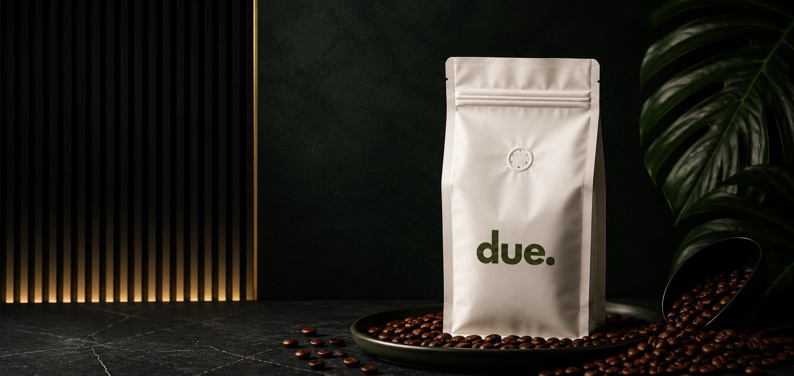
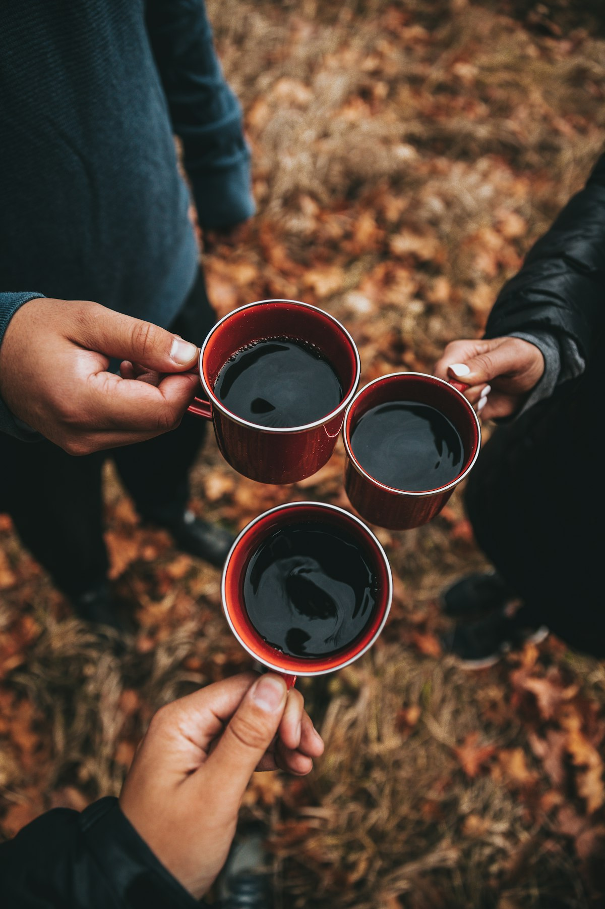
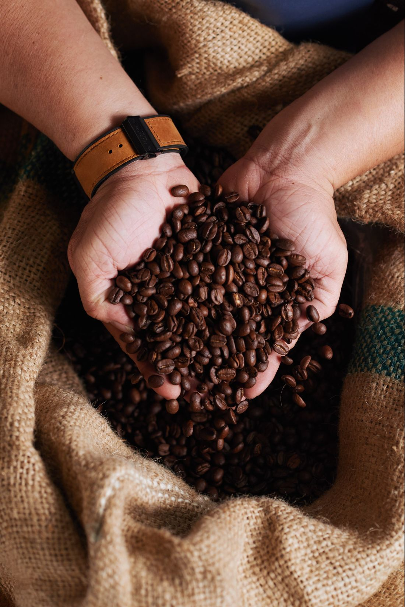
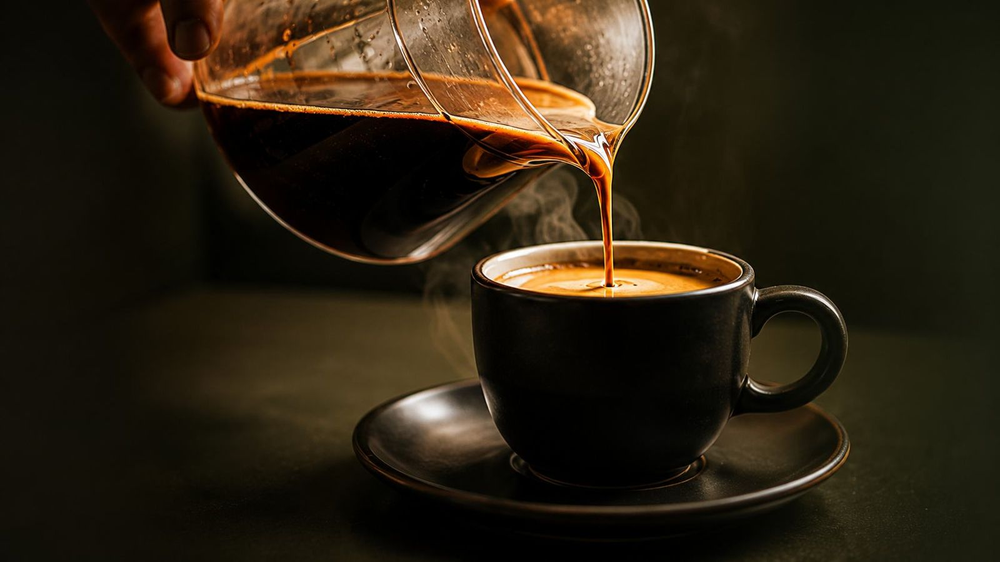
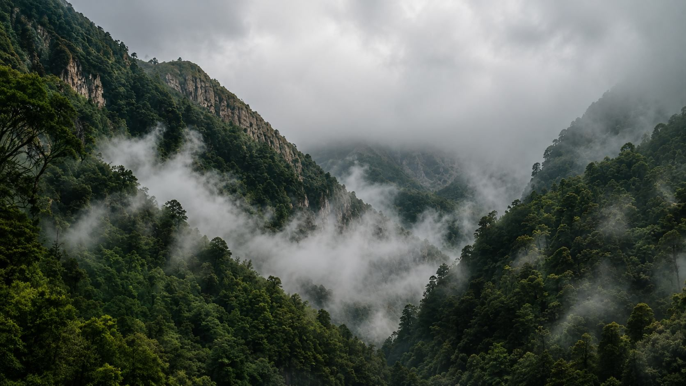
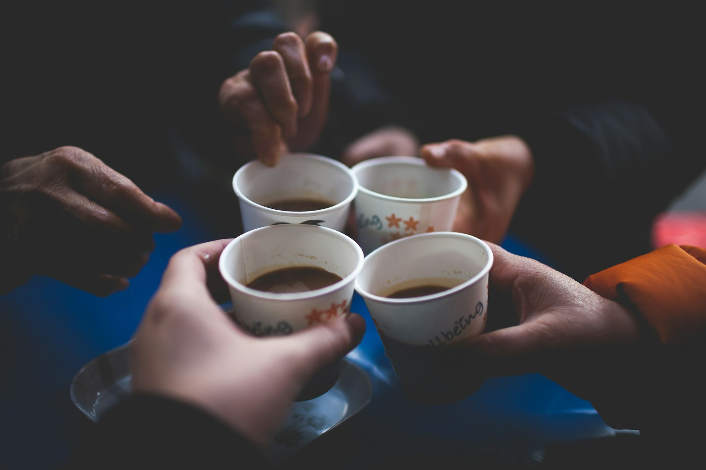
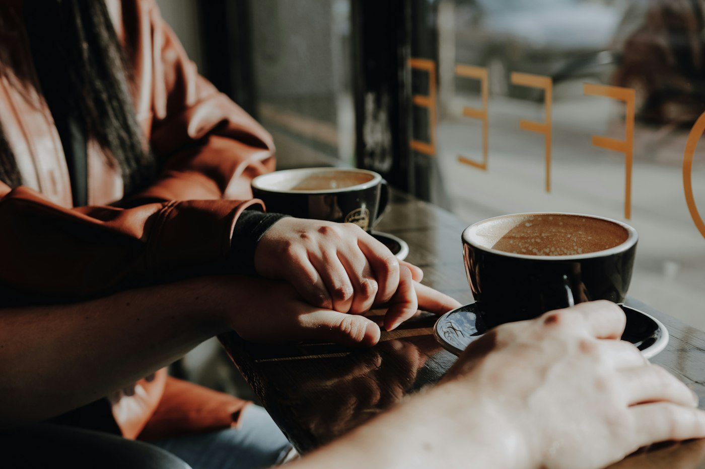
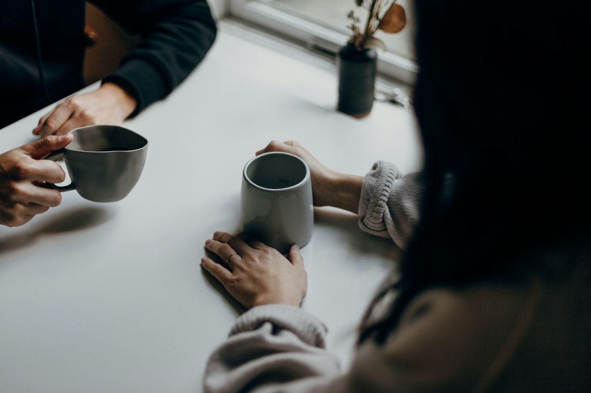
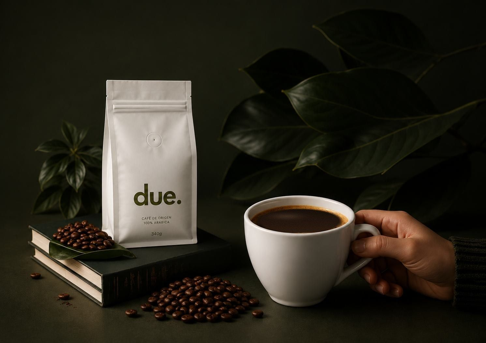

Nº 08
Origen por revelar
Un natural de altura. Fruta de hueso y flor de azahar.
00días
00horas
00min

Solo para quienes saben
Lotes únicos que no se anuncian en vitrinas. Se descubren entre pocos, se comparten en voz baja y, cuando se acaban, no vuelven.
Solicitar invitaciónNuestro pacto
El lote de esta temporada
Lote Nº 07, Pitalito (Huila). Pink Bourbon lavado con notas de frambuesa, panela y jazmín. Bolsas numeradas que se reservan primero para los miembros.
Ver el lote


Experiencias
Catas a puerta cerrada, recetas que no se publican y una contraseña nueva con cada lote. Lo que pasa en la mesa, se queda en la mesa.
Explorar el ritual
De dónde viene
Trabajamos de la mano con productores que cuidan la tierra. Su nombre está en cada bolsa; el resto lo cuentan en la mesa.
Conocer másArchivo de lotes
Cada lote agotado queda aquí como una noche que ya pasó. El siguiente está en camino. Lotes de ejemplo.
Nº 08
Un natural de altura. Fruta de hueso y flor de azahar.
Nº 06
Natural, heirloom. Arándano, bergamota, cacao.
Nº 05
Lavado, geisha. Jazmín, melocotón, miel.
Nº 04
Honey, caturra. Ciruela, caramelo, nuez.
Nº 03
Lavado, castillo. Naranja, panela, cacao.

La sociedad
Aquí nadie pregunta quién eres afuera. Te reconocemos por lo que sirves, por lo que compartes y por lo que guardas. Cada lote es una noche distinta; cada miembro, una silla en la mesa.


Suscripción
Tu bolsa de cada lote reservada antes de que exista para los demás, con su ficha numerada y la contraseña de la próxima cata.
Conocer la suscripción
Mantente cerca
El próximo lote llega primero a quien está en la lista.